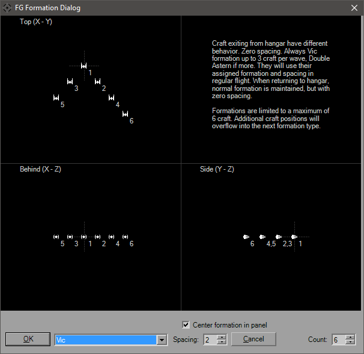

Formations Dialog

Each formation is shown from two different views with TIE Interceptors so you can understand its orientation. The bottom view in the image above is the TOP view, as are all views with those icons. That makes the other view the REAR. Different formations have different views depending on how the craft are laid out.
TIE has less formations than XvT and XWA, so while the dialog is the same for both, you will have less options for TIE. Some formations are also a little different between platforms, so both will be shown for comparison. As the note at the bottom states, this is with FG.LeaderSpacing = 0 and FG.FormationSpacing=2 (defaults). The craft are all numbered up to six (the YOGEME limit) so you can see how they're added in as you increase the number of craft.
Selecting OK will choose that formation and update the FlightGroup-Craft tab